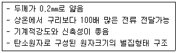
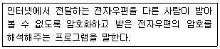
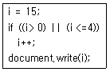
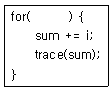
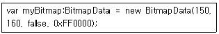
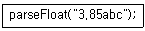

멀티미디어콘텐츠제작전문가 (2015-08-16 기출문제)
1과목: 멀티미디어개론
1. 컴퓨터와 온라인의 보안 취약점을 연구해 해킹을 방어하거나 퇴치하는 민·관에서 활동하는 보안전문가는?
- 그리드
- 크래커
- 화이트 해커
- 블랙 해커
(정답률: 92%)

2. 리눅스에서 로그인시 time out을 설정하는 파일은?
- /etc/profile
- /etc/passwd
- /etc/xinetd
- /ctc/services
(정답률: 60%)
3. 다음과 같은 특성으로 휘어지는 디스플레이 투명 디스플레이, 웨어러블 컴퓨터에 적용할 수 있는 차세대 소재는?

- 그래핀
- 폴리케톤
- 크레이프
- 슬립
(정답률: 73%)
4. 다음은 무엇에 대한 설명인가?

- POP
- PGP
- S/MIME
- SMTP
(정답률: 54%)
5. 하나의 콘텐츠를 PC, 스마트TV, 스마트폰, 태블릿 PC 둥 다양한 디지털 정보기기에서 끊김 없이 이용할 수 있게 해주는 서비스는?
- N-Screen
- NFC
- trackback
- Bluetooth
(정답률: 86%)
6. 전자우편 시스템인 S/MIME에서 사용되는 암호 알고리즘으로 가장 거리가 먼 것은?
- SHA-1(Secure Hash Algorithm-1)
- MD5(Message Digest 5 Algorithm)
- RSA(Rivest, Shamir, Adleman Algorithm)
- IDEA(International Data Encryption Algorithm)
(정답률: 52%)
7. OSI 7 계층 모델 중 보안을 위 한 암호화/해독과 효율적인 전송을 위한 정보압축 등의 기능을 수 행 하는 계층은?
- 응용계층
- 표현계층
- 전달계층
- 네트워크계층
(정답률: 65%)
8. 데이터의 무결성을 검증하는 보안 알고리즘은?
- Hash 함수
- DH
- SHED
- AES
(정답률: 73%)
9. #과 특정단어를 붙여 쓴 것으로서 트위터, 페이스북 등 소셜 미디어에서 특정 핵심어를 편리하게 검색할 수 있도록 하는 메타데이터의 형태는?
- OLAP
- Mobile UX/UI
- Hashtag
- PnP
(정답률: 86%)
10. 윈도우 XP에서 지원하지 않는 파일시스템은?
- FAT
- FAT32
- EXT2
- NTFS
(정답률: 68%)
11. 사람과 사물, 사물과 사물 간에 지능통신을 할 수 있는 M2M(Machine to Machine)의 개념을 인터넷으로 확장하여 사물은 물론 현실과 가상세계의 모든 정보와 상호 작용하는 개념은?
- IoT
- RFID
- VRML
- xHTML
(정답률: 95%)
12. UNIX 운영체재의 주요 구성요소로 거리가 먼 것은?
- kernel
- shell
- client/server
- file system
(정답률: 69%)
13. B 클래스에 속하는 IP 주소는?
- 200.200.200.1
- 192.200.190.1
- 168.126.63.1
- 244.221.5.1
(정답률: 73%)
14. UNIX 시스템의 기본 디렉토리 구조에 해당되지 않는 것은?
- /bin
- /tempo
- /dev
- /etc
(정답률: 72%)
15. IPv6의 주소체계는 몇 비트인가?
- 32bit
- 64bit
- 128bit
- 256bit
(정답률: 83%)
16. 다음 암호화 방식 중 비대칭 암호화 방식은?
- ARS
- IDEA V
- RSA
- DES
(정답률: 80%)
17. 해커가 무신 네트워크를 찾기 위해 무선 장치를 가지고 주위의 AP(Access Point)를 찾는 과정을 말하며 무선랜 해킹과정의 초기단계에 사용 하는 방법은?
- Spoofing
- sniffing
- War Driving
- War Dialing
(정답률: 78%)
18. 미국에서 진짜 와이파이(Wi-Fi)망을 복사한 가짜 망을 만들어, 접속한 사용자들의 신상 정보를 가로채는 인터넷 해킹 수법은?
- 교착상태
- 와레즈(warez)
- 에블 트윈(Evil Twins)
- 디도스(DDos)
(정답률: 82%)
19. 블루레이(Blu-ray)에 대한 설명으로 거리가 먼 것은?
- DVD보다 많은 용량의 데이터를 저장할 수 있다.
- 650㎜ 파장의 적색 레이저를 사용하여 데이터를 기록한다.
- 비디오 데이터 포맷은 MPEG-2를 사용한다.
- 오디오는 5.1채널의 AC-3를 지원한다.
(정답률: 89%)
20. 패킷을 전송할 때 소스 IP주소와 목적지 주소 값을 똑같이 만들어서 공격 대상에게 보내는 서비스 거부 공격은?
- Targa Attack
- Trinoo Attack
- Smurf Attack
- Land Attack
(정답률: 84%)
2과목: 멀티미디어기획및디자인
21. 데 스틸에 관한 설명으로 거리가 먼 것은?
- 개성을 배제한 주지주의적 손상 미술 운동이다.
- 인간의 정신 속에서 영감을 찾는 순수 조형이론이다.
- 녹색, 주황 등의 강한 색조를 주로 사용하였다.
- 색면 구성을 강조하여 구성에 있어 질서와 배분이 중요하다.
(정답률: 63%)
22. 다음 중 MAGENTA의 보색은?
- BLUE
- GREEN
- YELLOW
- GRAY
(정답률: 64%)
23. 병치혼합에 대한 설명으로 거리가 먼 것은?
- 색의 면적과 거리에 따라 눈의 망막 위에 혼합되어져 보이는 생리적 현상이라 할 수 있다.
- 인상파 화가의 점묘화나 직물에서 볼 수 있다.
- 명도, 채도가 높아져 보인다.
- 다른 색을 인접하게 배치해 두고 볼 때 생기는 혼합이다.
(정답률: 67%)
24. 색의 잔상효과 중 하나로서 흑백으로 나눈 면적을 고속으로 회전시키면 파스텔톤의 연한 유채색이 나타나는 현상은;?
- 에브니효과
- 페히너 효과
- 맥컬루효과
- 보색잔상효과
(정답률: 67%)
25. 기본적인 형태의 반복, 동심원 등의 기하학적인 문양직선미를 추구한 파리 중심의 1920년대 장식 미술은?
- 아르누보
- 아르데코
- 구성주의
- 옵아트
(정답률: 66%)
26. 자연현상에서 빨간 열매와 파란 잎의 싱그러운 대비는?
- 근접 보색의 조화
- 반대색의 조화
- 인접색의 조화
- 등간격 3색의 조화
(정답률: 78%)
27. 감산혼합에 대한 설명으로 거리가 먼 것은?
- 보색끼리 혼합하면 검정색에 가까워진다.
- 혼합하면 할수록 명도, 채도가 낮아진다.
- 삼원색은 R, G, B이다.
- 염료의 혼합, 물감의 혼색 등을 말한다.
(정답률: 75%)
28. 배색의 구성요소가 아닌 것은?
- 기조색
- 주조색
- 강조색
- 분리색
(정답률: 68%)
29. 색삼각형의 연속된 선상에 위치한 색들을 조합하면 관련된 시각적 요소가 포함되어 있기 때문에 서로 조화한다는 원리는?
- 비렌의 색채조화론
- 루드의 색채조화론
- 이텐의 색채조화론
- 문-스펜서의 색채조화론
(정답률: 61%)
30. 먼셀의 색상환에서 기본 5원색에 해당되지 않는 것은?
- 빨강
- 노랑
- 보라
- 주황
(정답률: 79%)
31. 오스트발트 색채체계의 단일 색상면 삼각형 내에서 동일한 양의 백색을 가지는 색채를 일정한 간격으로 선택하여 배색함으로써 얻을 수 있는 조화는?
- 등순색 조화
- 등가색환 조화
- 등흑색 조화
- 등백색 조화
(정답률: 64%)
32. 19세기 후반 영국의 윌리엄 모리스가 주창했던 것은?
- 구성주의
- 기능주의
- 미술공예주의
- 분리파
(정답률: 80%)
33. 2차원에서 모든 방향으로 펼쳐진 무한히 넓은 영역을 의미하며 형태를 생성하는 요소로서의 기능을 가진 것은?
- 점
- 선
- 면
- 입체
(정답률: 75%)
34. 색채 지각 반응 효과에서 명시성에 가장 크게 영향을 미치는 속성은?
- 명도 차이
- 채도 차이
- 색상 차이
- 질감 차이
(정답률: 81%)
35. 먼셀 기호 4.3YR 7/12에 대한 설명으로 옳은 것은?
- 명도는 4.3이다.
- 명도는 YR이다.
- 명도는 7이다.
- 명도는 12이다.
(정답률: 74%)
36. 푸르킨예 현상에 대한 설명으로 거리가 먼 것은?
- 빨간색은 밤이 되면 검게 보이고, 파란색이 밤이 되면 회색으로 보이는 현상
- 조명이 점차로 어두워지면 파장이 짧은 색이 먼저 사라지고 긴 색이 나중에 사라지는 현상
- 새벽이나 초저녁에 물체들이 대부분 푸르스름하게 보이는 현상
- 초저녁에 가까워질수록 초목의 잎이 선명하게 보이는 현상
(정답률: 57%)
37. 디지털 컬러에서 (R, G, B) 값이 (255, 255, 0)으로 주어질 때 색체는?
- MAGENTA
- GREEN
- YELLOW
- CYAN
(정답률: 60%)
38. 색상은 같게, 명도 차이는 크게 하여 통일성을 유지하면서 극적인 효과를 주는 배색 기법은?
- 까마이외 배색
- 톤온톤 배색
- 톤인톤 배색
- 포 까마이외 배색
(정답률: 80%)
39. 문·스팬서 조화론에서 분류하는 조화가 아닌 것은?
- 동일조화
- 이색조화
- 유사조화
- 대비조화
(정답률: 66%)
40. 태양, 형광등, 백열등, 네온사인 등은 다음 중 어디에 해당하는가?
- 물체색
- 표면색
- 투과색
- 광원색
(정답률: 87%)
3과목: 멀티미디어저작
41. 객체지향 방법론의 가장 큰 목적은?
- 객체의 캡슐화
- 소프트웨어 재사용
- 인스턴스 생성
- 설계 자동화
(정답률: 56%)
42. DOM 객체의 최고 상위 객체로 윈도우 내에 표시된 문서를 조작하는 객체는?
- Mater 객체
- Document 객체
- History 객체
- Location 객체
(정답률: 70%)
43. jQuery의 속성 선택자를 사용해서 PDP 파일을 가리키는 링크를 선택하는 코드로 가장 적절한 것은?
- $$([hrdf=pdf])
- $('input[img=.pdf]')
- $('a[href$=.pdf]')
- ##('a[type^^=.pdf]')
(정답률: 63%)
44. SQL의 Select문에 검색조건을 지정하는 절은?
- ORDER BY
- FROM
- WHERE
- NULL
(정답률: 69%)
45. AJAX에 대한 설명으로 틀린 것은?
- SOAP/XML 등 SW 통신 프로토콜을 이용
- XML과 XSLT를 이용한 데이터 교환 및 변경
- XMLHttpRequest를 이용한 비동기 데이터 검색
- 모든 것을 결합시켜 정리해 주는 ASP Script 사용
(정답률: 67%)
46. 다음 SQL문의 실행결과는?
- 성적 테이블만 삭제된다.
- 성적 테이블을 참조하는 테이블과 성적 테이블을 삭제한다.
- 성적 테이블이 참조 중이면 삭제하지 않는다.
- 성적 테이블을 삭제할 지의 여부를 사용자에게 다시 질 의한다.
(정답률: 73%)
47. html5의 특징으로 거리가 먼 것은?
- 시맨틱 마크업을 표현할 수 있다.
- 더 높은 접근성과 호환성을 가질 수 있다.
- 크로스 브라우징과 연관 없다.
- 웹 어플리케이션 개발을 위한 풍부한 API를 제공한다.
(정답률: 79%)
48. 자바스크립트의 여러 객체를 생성하여 사용할 때 같은 객체의 이름 충돌을 예방하기 위해 식별하는 용도로 사용하는 것은?
- 네임 스페이스
- 클래스
- 파일
- 함수
(정답률: 58%)
49. 자바스크립트의 문자열 형태로 둘러싸인 숫자값들을 정수나 실수 타입으로 인식하도록 변환하는 함수는?
- Number
- Int
- xFloat
- String
(정답률: 60%)
50. 다음 자바스크립트 조건문에서 출력되는 값은?

- 14
- 15
- 16
- 17
(정답률: 72%)
51. 1부터 100까지의 합을 구하는 액션스크립트에 서 ( )안에 들어갈 알맞은 코드는?

- i=1; i＜100; i++
- i=1; i＜=100; i++
- i=1; i＜100; i--
- i=1; i＜=100; i--
(정답률: 74%)
52. html 문서의 모든 내용이 화면에 출력된 이후에 함수 init를 호출하여 실행하는 자바스크립트 코드는?
- window.init
- window.upload
- window.init=onload
- window.onload=init
(정답률: 59%)
53. 자바스크립트에서 data라는 이름으로 정수값 10을 저장하기 위한 변수 선언과 초기화 문장의 형태로 맞는 것은?
- float data = 10;
- int data = 10;
- integer data = 10;
- var data = 10;
(정답률: 75%)
54. 다음 SQL 문장 중 column1의 값이 널(null value) 값인 경우를 찾아내는 문장은?
- select * from ssTable where column1 is null;
- select * from ssTable where column1 = null;
- select * from ssTable where column1 EQUALS null;
- select * from ssTable where column1 not null;
(정답률: 68%)
55. Action Script3.0에서 아래 코드에 대한 설명으로 맞는 것은?

- 비트맵 이미지의 높이(height) : 150픽셀
- 비트맵 이미지의 폭(width) : 160픽셀
- 비트맵 이미지의 투명도(transparent) : false
- 비트맵 이미지 영역(fillcolor) : blue
(정답률: 73%)
56. XML 파일로 된 웹페이지를 읽어 원하는 정보를 수집하는 기능으로, 웹페이지를 만드는 사람은 주기적으로 내용을 개정하고 사용자는 그 페이지의 URL만 알면 웹 브라우저로 읽어 정보를 얻을 수 있는 기술은?
- OWL
- REST
- GIS
- PAN
(정답률: 47%)
57. 다음 플래시5 액션스크립트 함수에서 추출되는 값은?

- 3.85a
- 3
- abc
- 3.85
(정답률: 73%)
58. HTML이나 XML문서에 접근하기 위해 html 태그들을 표준적인 구조의 객체로 모델링하여 크로스 브라우징 환경에 대비한 것은?
- DOM
- FORM
- BROWSER
- WINDOW
(정답률: 60%)
59. 객체지향언어에 대한 설명으로 거리가 먼 것은?
- 캡슐화를 통하여 결합도를 향상시킨다.
- 소프트웨어의 유지보수성이 향상된다.
- 상속을 통하여 이미 정의된 다른 클래스의 내용을 재사용 할 수 있다.
- 캡슐화와 정보 은닉을 지원한다.
(정답률: 40%)
60. SQL에서 VIEW를 삭제할 때 사용하는 명령은?
- DROP
- ERASE
- DELETE
- KILL
(정답률: 67%)
4과목: 멀티미디어제작기술
61. 색온도(Color Temperature)에 대한 설명으로 거리가 먼 것은?
- 표시단위로 K(Kelvin)를 사용한다,
- 광원의 종류에 따라 색온도가 다르다.
- 색온도가 낮으면 푸른색, 색온도가 높으면 붉은색 띄게 된다.
- 절대온도인 273℃와 그 흑체의 섭씨온도를 합친 색광의 절대 온도이다.
(정답률: 48%)
62. 영상# 표현하는 촬영기법 중에서, 소도구나 몸동작 등의 상징적인 표현으로 배경이나 그 속에 숨겨져 있는 상황 등을 정확히 표현하는 기법은?
- 세레이드(Charade)
- 이미지너리 라인(Imaginary line)
- 오버랩(Ovrlap)
- 팔로잉(Following)
(정답률: 58%)
63. 수퍼맥테크놀로지스사(SupcrMac Technologies)에서 개발한 영상코덱으로 320×240 해상도의 영상을 1배속 CD-ROM 전송속도에 맞게 변환하기 위해 개발된 코덱은?
- Cinepak
- Indeo
- TrueMotion
- Clear Video
(정답률: 58%)
64. 비네 팅(Vignetting) 현상에 대한 설명으로 옳은 것은?
- 렌즈 주변부의 광량 저하로 촬영된 사진의 외곽이나 모서리가 어둡게 나오는 현상
- 화이트밸런스가 제대로 맞지 않아 화면이 하얗게 번지는 현상
- 강한 빛이 렌즈 내 유리에 반사되어 화면에 조리개 모양이나 렌즈 유리모양의 밝고 뿌연 허상이 찍히는 현상
- 편광필터를 잘못 사용하여 화면에 사선으로 줄이가는 현상
(정답률: 69%)
65. 여러 개의 음원 중 제일 먼저 도달하는 음원 쪽에 음상이 정위되는 현상은?
- 마스킹 효과
- 하스 효과
- 도플러 효과
- 비트 효과
(정답률: 68%)
66. 마스크 영상에서 해당하는 키 화상(Key Image)을 추출함과 동시에 배경 영상을 진경영상으로 합성하는 디지털 영상 합성 방법은?
- 필름의 합성
- 전처리과정
- 크로마키합성
- 양자화
(정답률: 78%)
67. 양지향성과 단일지향성의 마이크를 음원에 가까이 대고 사용하면 저음의 출력이 증가되는 현상은?
- 칵테일 파티 효과
- 회절
- 도플러 효과
- 근접 효과
(정답률: 80%)
68. JPEG 순차모드 압축 과정 순서로 맞는 깃은?
- 원영상(8×8)→DCT→양자화→엔트로피부호화→압축데이터
- 원영상(8×8)→양자화→DCT→엔트로피부호화→압축데이터
- 원영상(8×8)→엔트로피부호화→양자화→DCT→압축데이터
- 원영상(8×8)→압축데이터→엔트로피부호화→DCT→양자화
(정답률: 53%)
69. 300Hz와 302Hz 두 음에서 발생되는 맥놀이의 주기(s)는?
- 0.25
- 0.5
- 0.7
- 0.95
(정답률: 62%)
70. 물체의 표면만 정의되는 서피스 모델링과 달리 표면과 객체의 내부도 정의되어 있는 모델로써 객체의 물리적인 성질까지 계산할 수 있는 모델링은?
- 프랙탈(Fractal) 모델링
- 와이어프레임(Wire Frame) 모델링
- 스플라인(Spline) 모델링
- 솔리드(Solid》모델링
(정답률: 60%)
71. 다음 중 1889년 토머스 에디슨이 창안한 영사기는?
- 키네토스코프
- 뮤토스코프
- 씨네마토그라프
- 고우몬
(정답률: 73%)
72. 미국의 앨더스사와 마이크로소프트사 공동으로 개발한 래스터 화상 파일 형식은?
- TARGA
- TIFF
- EPS
- PSD
(정답률: 78%)
73. 은선/은면 제거 알고리즘 중 광원으로부터 빛이 물체에 반사되고 이것이 관찰자에게 도달함으로써 관찰자가 이를 볼 수 있다는 원리에 근거한 알고리즘은?
- Priority fill 알고리즘
- Ray tracing 알고리즘
- Z-버퍼 알고리즘
- Painter's 알고리즘
(정답률: 68%)
74. 컴퓨터 그래픽스 음영기법 중 각 꼭지점의 법선 벡터를 보간하여 면 내부 픽셀의 음영 값을 구하는 방법은?
- 레이 트레이싱
- 퐁 세이딩
- 고러드 세이딩
- 플랫 세이딩
(정답률: 47%)
75. H.261 표준 압축 부호화 방식에 대한 설명으로 거리가 먼 것은?
- 이 규격의 전송속도는 p(p=1~30)×64kbps이다.
- 영상 전화나 영상 회의용 동화상 압축부호화 방식이다.
- 부호화 알고리즘은 움직임보상과 이산코사인 변환을 조합한 방식이다.
- 32kbps ADPCM 코딩 기법을 사용하는 음성 코덱 표준이다.
(정답률: 52%)
76. MPEG 압축 기술의 프레임 종류로 거리가 먼 것은?
- I
- P
- B
- Z
(정답률: 58%)
77. 컴퓨터그래픽에서 3차원 입체를 표현하기 위한 기본적인 단위는?
- pixel
- voxel
- texel
- dot
(정답률: 55%)
78. 다음 중 손실 부호화 압축방법으로 기리가 먼 것은?
- 절단 부호화
- 양자화 부호화
- 변환 부호화
- 허프만 부호화
(정답률: 61%)
79. 음향 신호를 전송하거나 녹음할 때 최강음과 최약음의 비를 [dB]로 나타낸 것을 무엇이라 하는가?
- 다이나믹레인지
- S/N 비
- SPL
- 정재파비
(정답률: 70%)
80. 잔향시간이란 실내의 음원을 정지시킨 후 음압레벨이 얼마 감쇠되는데 소요되는 시간을 의미하는가?
- 20dB
- 40dB
- 60dB
- 80dB
(정답률: 60%)